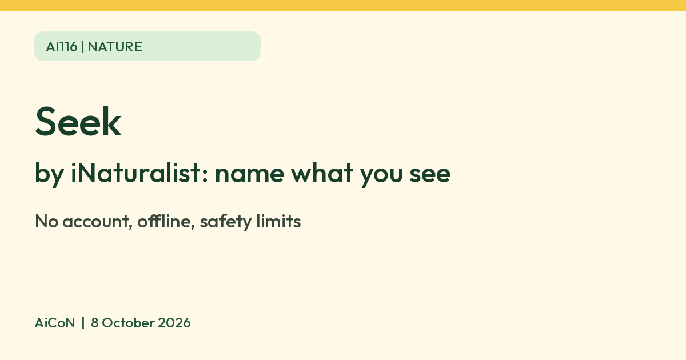

Seek by iNaturalist: identify nature, no account needed
Seek by iNaturalist is a free app that uses image recognition to name plants, animals and fungi from your camera. It needs no account, and iNaturalist says it collects no personal data from users who do not log in. Treat its names as suggestions, never as safety advice.

What it is
Seek is an app from iNaturalist. You point the camera at a plant, animal or fungus and Seek names it on screen using image recognition. iNaturalist's help page describes it as instant, AI-assisted identification based on iNaturalist data, with badges and monthly observation challenges for fun. The App Store India listing shows Seek as Free.
How it differs from iNaturalist
| Account | Seek needs no account. Users 13 or older, or with parental permission, can optionally log in and post observations to iNaturalist. |
|---|---|
| Data | iNaturalist says data you record in Seek does not leave your device and no personally identifiable information is collected from users who do not log in. |
| Internet | iNaturalist says Seek does not need an internet connection to work. |
| Identification | Seek names the organism in real time. iNaturalist says Seek's model is generally older than the online iNaturalist model. |
| Community | The iNaturalist app has other people confirm your observations. Seek does not. |
How to use it
- Install Seek from the App Store or Google Play.
- Open the Seek Camera and point it at the plant, animal or fungus.
- Move slowly and hold steady until it shows a name.
- Add the species to your observations to earn badges.
Seek asks for location permission to suggest species common in your general area. iNaturalist says your location is obscured and the precise location is not stored or sent in the no-login mode described on the product page. The App Store listing adds an exception: signing in and submitting observations can send location and other observation data to iNaturalist.
Limits and safety
- Do not eat a plant or mushroom, or touch a wild animal, because Seek named it. iNaturalist's pages do not present Seek as a safety tool, and neither do we.
- Seek's model is older than iNaturalist's online model, so use iNaturalist if you want people to confirm a tricky find.
- Species suggestions depend on its training data, which comes from iNaturalist observations. How well it covers Indian species was not verified.
- Seek is a hobby tool, not a scientific ID.
Frequently asked questions
Is Seek free?
The App Store India listing says Free. We did not check Google Play pricing.
Do I need an account?
No. Logging in is optional.
Does it work offline?
iNaturalist says Seek does not need an internet connection to work.
Is it safe to eat what Seek identifies?
Never rely on it for that.
How is it different from Pl@ntNet?
Seek covers plants, animals and fungi and needs no account. Pl@ntNet focuses on plants.
Sources: iNaturalist: Seek, iNaturalist Help: iNaturalist vs Seek, App Store India. Checked 8 October 2026.